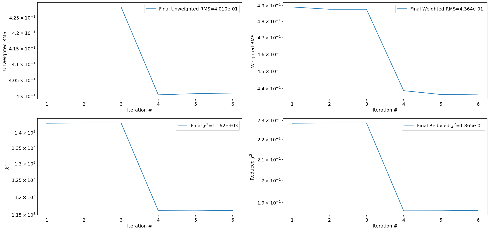
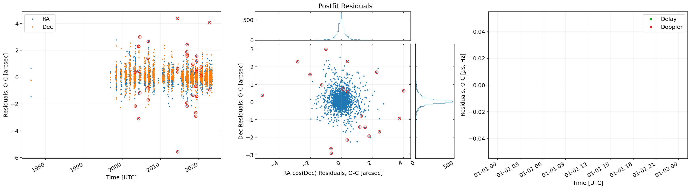
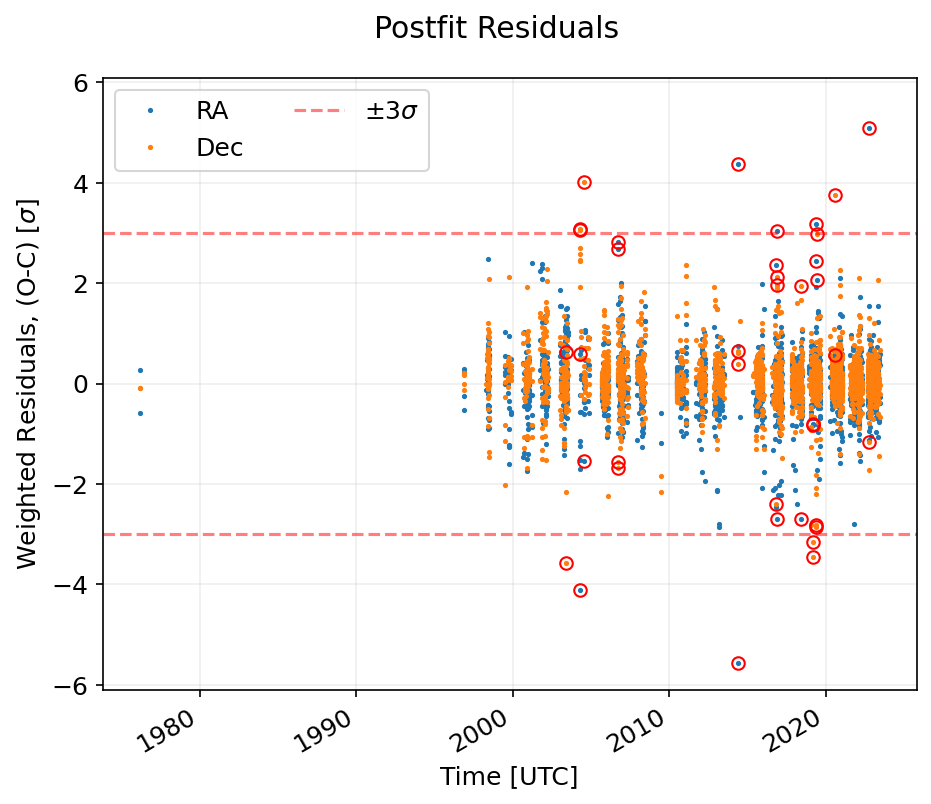

(12104) Chesley orbit determination test#
[1]:
import grss
prop = grss.prop
fit = grss.fit
[2]:
import numpy as np
np.set_printoptions(precision=40, linewidth=np.inf)
import matplotlib.pyplot as plt
[3]:
body_id = '12104'
init_sol, init_cov, nongrav_info = fit.get_sbdb_info(body_id)
body_radius = 0.0
de_kernel = 441
de_kernel_path = grss.utils.default_kernel_path(de_kernel)
[4]:
add_gaia_obs = True
optical_obs_file = None
t_min_tdb = None
t_max_tdb = None
debias_hires = False
debias_lowres = True
deweight = True
eliminate = False
max_obs_per_night = 4
verbose = True
obs_array_optical, observer_codes_optical = fit.get_mpc_optical_obs_array(body_id, optical_obs_file, t_min_tdb, t_max_tdb, debias_hires, debias_lowres, deweight, eliminate, max_obs_per_night, verbose)
obs_array_radar, observer_codes_radar = fit.get_radar_obs_array(body_id, t_min_tdb, t_max_tdb, verbose)
if add_gaia_obs:
obs_array_gaia, observer_codes_gaia = fit.get_gaia_optical_obs_array(body_id, de_kernel_path, t_min_tdb=None, t_max_tdb=None, verbose=True)
obs_array_optical = np.vstack((obs_array_optical, obs_array_gaia))
observer_codes_optical = observer_codes_optical + observer_codes_gaia
Skipped 28 observations
28 of which were non-geocentric occultations or space-based observations,
0 were either roving or radar observations (radar is handled separately),
0 of which were outside the specified time range.
No debiasing needed for 1822 observations. Debiased 1273 observations. No biasing information for 10 observations.
Applied default weight of 1 arcsec to 153 CCD observations
Deweighted 800 observations as part of deweighting scheme.
Found 257 observations from Gaia DR3.
Added 32 of those observations.
[5]:
n_iter_max = 10
fit_sim = fit.FitSimulation(init_sol, init_cov, obs_array_optical, observer_codes_optical, obs_array_radar, observer_codes_radar, n_iter_max=n_iter_max, de_kernel=de_kernel, de_kernel_path=de_kernel_path, radius=body_radius, nongrav_info=nongrav_info)
[6]:
fit_sim.filter_lsq()
Iteration Unweighted RMS Weighted RMS Chi-squared Reduced Chi-squared
1 0.428 0.507 1543.305 0.246
2 0.428 0.505 1544.271 0.246
3 0.428 0.505 1544.271 0.246
Converged without rejecting outliers. Starting outlier rejection now.
4 0.397 0.458 1247.942 0.200
5 0.397 0.458 1247.925 0.200
Converged after rejecting outliers.
[7]:
fit_sim.print_summary()
Summary of the orbit fit calculations at iteration 5 (of 5):
=======================================================
RMS unweighted: 0.3972311942163293
RMS weighted: 0.4577513379571854
chi-squared: 1247.9245966611536
reduced chi-squared: 0.20030892402265707
square root of reduced chi-squared: 0.447558849786994
=======================================================
t: MJD 57747.0 TDB
Fitted Variable Initial Value Uncertainty Fitted Value Uncertainty Change Change (sigma)
e 2.41663381933e-02 1.04627140790e-08 2.41663437904e-02 1.00855569710e-08 +5.59716246268e-09 +0.535
q 2.93823893665e+00 3.56230095612e-08 2.93823892453e+00 3.43069882433e-08 -1.21216454652e-08 -0.340
tp 5.68199298246e+04 1.13863320389e-04 5.68199299408e+04 1.09461727771e-04 +1.16242772492e-04 +1.021
om 7.80621900600e+01 3.59365037852e-07 7.80621894094e+01 3.44153323235e-07 -6.50635016086e-07 -1.811
w 1.82993622616e+02 2.04141793706e-05 1.82993644772e+02 1.96130801750e-05 +2.21563303171e-05 +1.085
i 1.11516133707e+01 2.06158828465e-07 1.11516137560e+01 2.01559503027e-07 +3.85341287767e-07 +1.869
[8]:
fit_sim.plot_summary(auto_close=True)

[9]:
fit_sim.iters[-1].plot_iteration_summary(title='Postfit Residuals', auto_close=True)


[10]:
mean_0 = np.array(list(init_sol.values())[1:])
cov_0 = init_cov
mean_f = np.array(list(fit_sim.x_nom.values()))
cov_f = fit_sim.covariance
maha_dist_f, maha_dist_0, bhattacharya, bhatt_coeff = fit.get_similarity_stats(mean_0, cov_0, mean_f, cov_f)
print(f'Mahalonobis distance between JPL and GRSS solution: {maha_dist_f:0.2f}')
print(f'Mahalonobis distance between GRSS and JPL solution: {maha_dist_0:0.2f}')
print(f'Bhattacharya distance between JPL and GRSS solution: {bhattacharya:0.4f}')
print(f'Bhattacharya coefficient between JPL and GRSS solution: {bhatt_coeff:0.4f}')
Mahalonobis distance between JPL and GRSS solution: 2.98
Mahalonobis distance between GRSS and JPL solution: 3.07
Bhattacharya distance between JPL and GRSS solution: 0.0023
Bhattacharya coefficient between JPL and GRSS solution: 0.9977
[11]:
assert maha_dist_f < 5.0
assert maha_dist_0 < 5.0
assert bhattacharya < 0.10
assert bhatt_coeff > 0.90
[ ]: